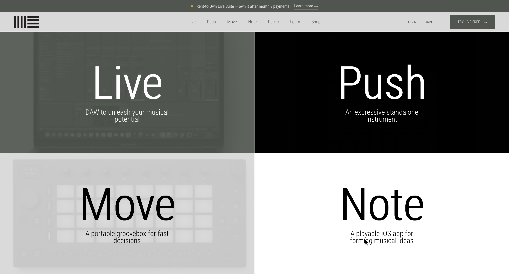
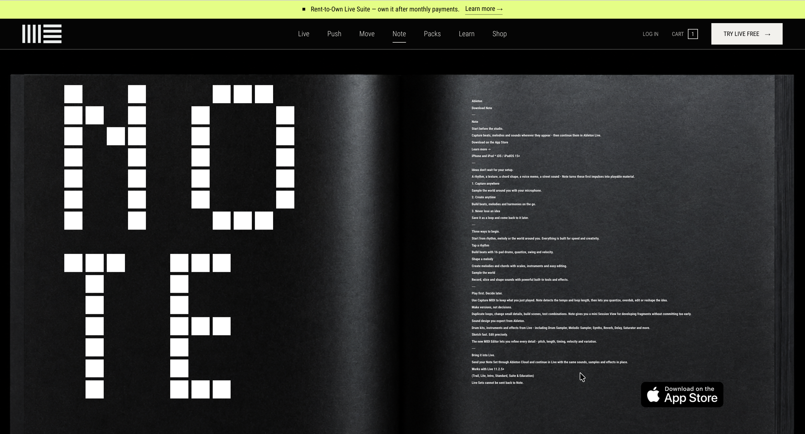
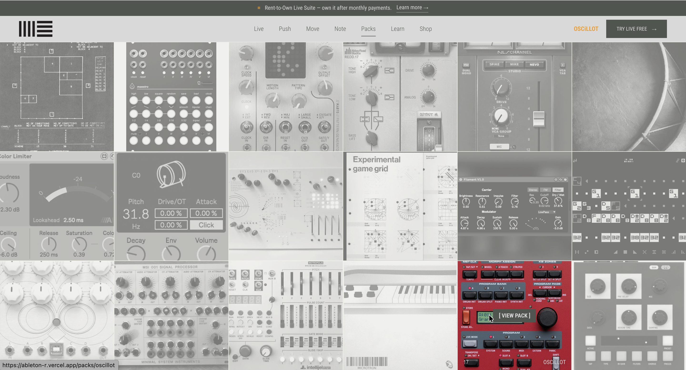
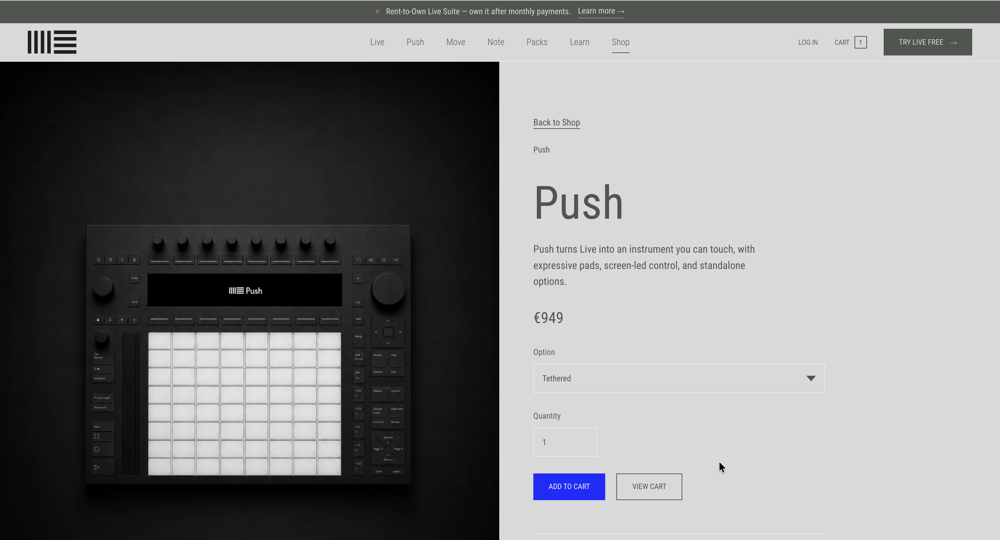

AbletonR
A redesign of Ableton’s web experience that puts Live’s Session View at the centre of the story: an open workspace for starting with clips, scenes and musical fragments.

01 — THE ECOSYSTEM
Four ways into the same musical idea.
The opening screen presents Live, Push, Move and Note by the role each one plays. Live is the open production environment; Push turns its workflow into an expressive instrument; Move makes it compact and portable; Note brings the first sketch to iOS.
What connects them is Session View’s non-linear logic. Clips can be launched in any order, scenes hold different combinations, and an idea can stay flexible before it becomes an arrangement. The four-part grid makes that shared foundation visible without making the products look interchangeable.

02 — NOTE
Capture first. Decide later.
Note is designed for the moment before a session has fully formed. Its microphone can turn sounds from the environment into playable material, while Capture MIDI keeps a performance after it happens, detects its tempo and length, and turns it into a loop that can still be quantized, reshaped or extended.
The redesign treats that workflow as an editorial spread rather than a conventional feature list. The oversized NO / TE letterforms occupy one page; the other carries the progression from capture, to variation, to an Ableton Cloud handoff into Live.

03 — PACKS
A sound library should feel like material, not inventory.
Ableton Packs can contain Live Sets, samples, Clips and presets — complete starting points as well as individual sounds and devices. The redesign turns that breadth into a visual archive, using instruments, interfaces and source imagery to communicate the character of each collection before asking the visitor to read specifications.
The mosaic replaces a repetitive shop grid with a field of distinct sonic identities. A single colour accent marks the active Pack, so selection remains clear while the archive keeps its dense, exploratory quality.

04 — PUSH
Session View, made physical.
Push is both an expressive instrument and a controller for Live. Its 64 MPE-enabled pads capture pitch, slide and pressure, while standalone and tethered configurations let the same device work away from the computer or in direct control of Live.
The product page makes that dual role concrete. The instrument remains the dominant object on the left; configuration, quantity and cart controls form a quieter purchase column on the right. The split view connects tactile performance with a clear buying decision without reducing Push to a specification sheet.
05 — IN CODE
One system, four distinct page behaviours.
The project is a working multi-route website, not a static proposal. Product pages, the Packs archive and the shop share navigation, persistent cart state and responsive rules, while each route keeps the visual density and interaction model appropriate to its subject.